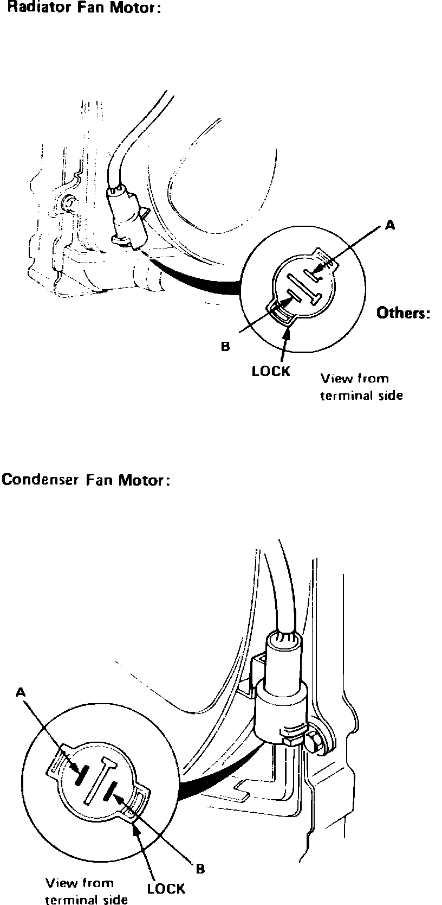
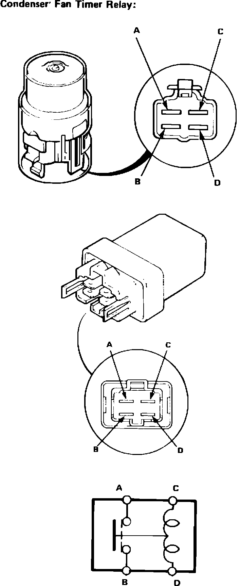

Cooling Fan Motor Diode
Fig. 15 Fan motor terminal identification. Legend:

Fan Motors
1. Disconnect fan motor electrical connector.
2. Connect battery positive to connector terminal A and negative to connector terminal B, Fig. 15.
3. If fan motor does not operate, it is defective and must be replaced.
Fig. 16 Relay terminal identification. Legend:

Relays
1. Ensure no continuity exists between relay terminals A and B, Fig. 16.
2. Connect 12 volts across terminals C and D and ensure continuity now exists between terminals A and B.
Fig. 17 Coolant temperature switch test. Legend:

Coolant Temperature Switch
1. Suspend coolant temperature switch in a container of coolant, Fig. 17.
2. Heat coolant and measure resistance across switch terminals at several temperatures.
3. Resistance should measure 1047-1255 ohms at 183°F, 872-1024 ohms at 194°F, 504-558 ohms at 228°F on 1986-87 models, or 462-510 ohms at 234°F on 1988 models.
Oil Temperature Switch
1. Check operation of oil temperature switch in same manner as previously described for coolant temperature switch.
2. Continuity should exist between switch terminals when coolant temperature exceeds 214-228°F.